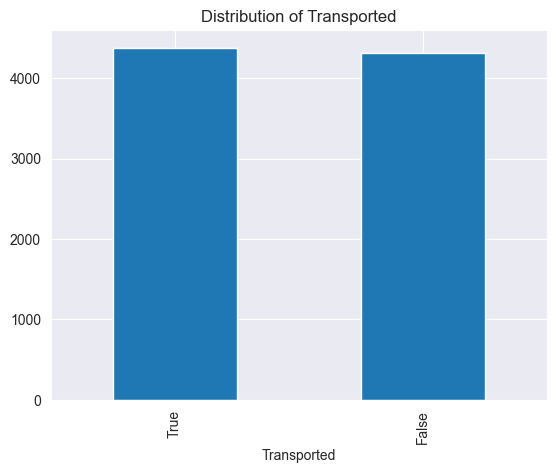
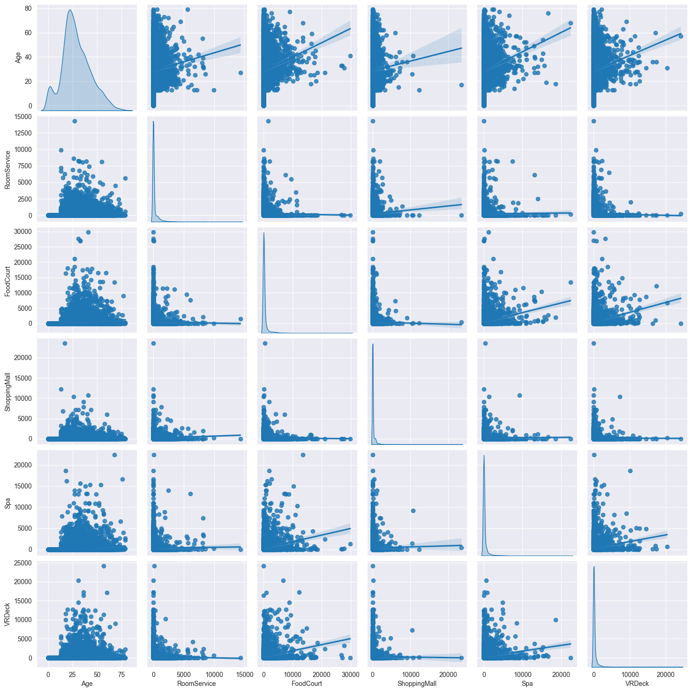
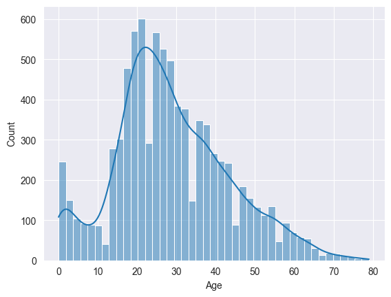
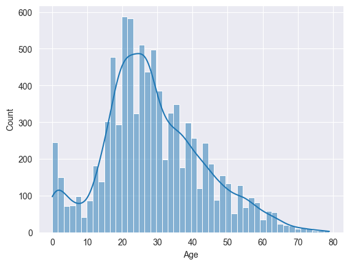
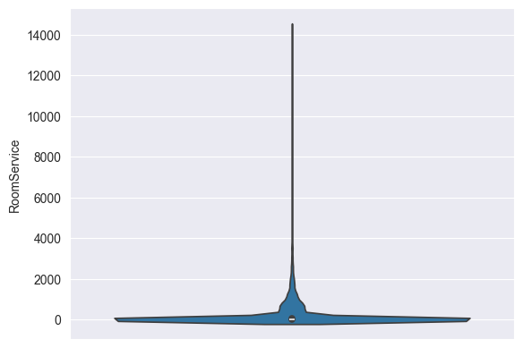

太空船#
预测一个太空飞船在发生碰撞时候，乘客是否会发送到另一个维度
提交记录
randomforest: 0.72
数据认识#
import numpy as np
import pandas as pd
import matplotlib.pyplot as plt
import seaborn as sns
sns.set_style("darkgrid")
pd.__version__
'2.3.3'
train_data = pd.read_csv('data/train.csv')
train_data.head()
| PassengerId | HomePlanet | CryoSleep | Cabin | Destination | Age | VIP | RoomService | FoodCourt | ShoppingMall | Spa | VRDeck | Name | Transported | |
|---|---|---|---|---|---|---|---|---|---|---|---|---|---|---|
| 0 | 0001_01 | Europa | False | B/0/P | TRAPPIST-1e | 39.0 | False | 0.0 | 0.0 | 0.0 | 0.0 | 0.0 | Maham Ofracculy | False |
| 1 | 0002_01 | Earth | False | F/0/S | TRAPPIST-1e | 24.0 | False | 109.0 | 9.0 | 25.0 | 549.0 | 44.0 | Juanna Vines | True |
| 2 | 0003_01 | Europa | False | A/0/S | TRAPPIST-1e | 58.0 | True | 43.0 | 3576.0 | 0.0 | 6715.0 | 49.0 | Altark Susent | False |
| 3 | 0003_02 | Europa | False | A/0/S | TRAPPIST-1e | 33.0 | False | 0.0 | 1283.0 | 371.0 | 3329.0 | 193.0 | Solam Susent | False |
| 4 | 0004_01 | Earth | False | F/1/S | TRAPPIST-1e | 16.0 | False | 303.0 | 70.0 | 151.0 | 565.0 | 2.0 | Willy Santantines | True |
train_data.shape
(8693, 14)
train_data.info()
<class 'pandas.core.frame.DataFrame'>
RangeIndex: 8693 entries, 0 to 8692
Data columns (total 14 columns):
# Column Non-Null Count Dtype
--- ------ -------------- -----
0 PassengerId 8693 non-null object
1 HomePlanet 8492 non-null object
2 CryoSleep 8476 non-null object
3 Cabin 8494 non-null object
4 Destination 8511 non-null object
5 Age 8514 non-null float64
6 VIP 8490 non-null object
7 RoomService 8512 non-null float64
8 FoodCourt 8510 non-null float64
9 ShoppingMall 8485 non-null float64
10 Spa 8510 non-null float64
11 VRDeck 8505 non-null float64
12 Name 8493 non-null object
13 Transported 8693 non-null bool
dtypes: bool(1), float64(6), object(7)
memory usage: 891.5+ KB
train_data.describe()
| Age | RoomService | FoodCourt | ShoppingMall | Spa | VRDeck | |
|---|---|---|---|---|---|---|
| count | 8514.000000 | 8512.000000 | 8510.000000 | 8485.000000 | 8510.000000 | 8505.000000 |
| mean | 28.827930 | 224.687617 | 458.077203 | 173.729169 | 311.138778 | 304.854791 |
| std | 14.489021 | 666.717663 | 1611.489240 | 604.696458 | 1136.705535 | 1145.717189 |
| min | 0.000000 | 0.000000 | 0.000000 | 0.000000 | 0.000000 | 0.000000 |
| 25% | 19.000000 | 0.000000 | 0.000000 | 0.000000 | 0.000000 | 0.000000 |
| 50% | 27.000000 | 0.000000 | 0.000000 | 0.000000 | 0.000000 | 0.000000 |
| 75% | 38.000000 | 47.000000 | 76.000000 | 27.000000 | 59.000000 | 46.000000 |
| max | 79.000000 | 14327.000000 | 29813.000000 | 23492.000000 | 22408.000000 | 24133.000000 |
数据分析#
列分类#
# 拆分列
train_data[['Deck','CabinNum', 'Side']] = train_data['Cabin'].str.split('/', expand=True)
# 统计缺失值
train_data.isnull().sum()
PassengerId 0
HomePlanet 201
CryoSleep 217
Cabin 199
Destination 182
Age 179
VIP 203
RoomService 181
FoodCourt 183
ShoppingMall 208
Spa 183
VRDeck 188
Name 200
Transported 0
Deck 199
CabinNum 199
Side 199
dtype: int64
# drop column: name,cabin,passengerId
train_data = train_data.drop(columns=['PassengerId', 'Name', 'Cabin'])
numerical_columns = ['Age', 'RoomService', 'FoodCourt', 'ShoppingMall', 'Spa', 'VRDeck']
target_column = 'Transported'
categorical_columns = ['HomePlanet', 'CryoSleep', 'Destination', 'VIP','Deck','CabinNum', 'Side']
print("Numerical columns:", numerical_columns)
print("Categorical columns:", categorical_columns)
Numerical columns: ['Age', 'RoomService', 'FoodCourt', 'ShoppingMall', 'Spa', 'VRDeck']
Categorical columns: ['HomePlanet', 'CryoSleep', 'Destination', 'VIP', 'Deck', 'CabinNum', 'Side']
train_data[numerical_columns].describe()
| Age | RoomService | FoodCourt | ShoppingMall | Spa | VRDeck | |
|---|---|---|---|---|---|---|
| count | 8514.000000 | 8512.000000 | 8510.000000 | 8485.000000 | 8510.000000 | 8505.000000 |
| mean | 28.827930 | 224.687617 | 458.077203 | 173.729169 | 311.138778 | 304.854791 |
| std | 14.489021 | 666.717663 | 1611.489240 | 604.696458 | 1136.705535 | 1145.717189 |
| min | 0.000000 | 0.000000 | 0.000000 | 0.000000 | 0.000000 | 0.000000 |
| 25% | 19.000000 | 0.000000 | 0.000000 | 0.000000 | 0.000000 | 0.000000 |
| 50% | 27.000000 | 0.000000 | 0.000000 | 0.000000 | 0.000000 | 0.000000 |
| 75% | 38.000000 | 47.000000 | 76.000000 | 27.000000 | 59.000000 | 46.000000 |
| max | 79.000000 | 14327.000000 | 29813.000000 | 23492.000000 | 22408.000000 | 24133.000000 |
from sklearn.model_selection import train_test_split
X = train_data[numerical_columns + categorical_columns]
y = train_data[target_column]
X_train, X_test, y_train, y_test = train_test_split(X, y, test_size=0.2, random_state=42)
print("Training set shape:", X_train.shape)
print("Test set shape:", X_test.shape)
Training set shape: (6954, 13)
Test set shape: (1739, 13)
target column 分析#
train_data[target_column].value_counts()
Transported
True 4378
False 4315
Name: count, dtype: int64
train_data['Transported'].value_counts().plot(kind='bar')
plt.title('Distribution of Transported')
Text(0.5, 1.0, 'Distribution of Transported')

train_data[target_column] = train_data[target_column].astype(int)
可以看到，目标列的值分布均匀。
numerical column 分析#
numerical_columns
['Age', 'RoomService', 'FoodCourt', 'ShoppingMall', 'Spa', 'VRDeck']
sns.pairplot(train_data[numerical_columns], kind='reg', diag_kind='kde')
<seaborn.axisgrid.PairGrid at 0x13dfb7a0e10>

age呈现双峰正太分布
这几个属性之间没什么相关关系。
age清洗#
sns.histplot(train_data['Age'], kde=True)
<Axes: xlabel='Age', ylabel='Count'>

都是合理的，不应该去掉age=0的那些，可能是婴儿把。
train_data['Age'][train_data['Age'].isna()]
50 NaN
64 NaN
137 NaN
181 NaN
184 NaN
..
8274 NaN
8301 NaN
8374 NaN
8407 NaN
8557 NaN
Name: Age, Length: 179, dtype: float64
train_data['Age'].fillna(train_data['Age'].median(), inplace=True)
C:\Users\63517\AppData\Local\Temp\ipykernel_24204\892819329.py:1: FutureWarning: A value is trying to be set on a copy of a DataFrame or Series through chained assignment using an inplace method.
The behavior will change in pandas 3.0. This inplace method will never work because the intermediate object on which we are setting values always behaves as a copy.
For example, when doing 'df[col].method(value, inplace=True)', try using 'df.method({col: value}, inplace=True)' or df[col] = df[col].method(value) instead, to perform the operation inplace on the original object.
train_data['Age'].fillna(train_data['Age'].median(), inplace=True)
train_data['Age'] = train_data['Age'].astype(int)
sns.histplot(train_data['Age'], kde=True)
<Axes: xlabel='Age', ylabel='Count'>

age列处理完毕， 保持分布
其他列清洗#
sns.violinplot(train_data['RoomService'])
<Axes: ylabel='RoomService'>

train_data[['RoomService', 'FoodCourt', 'ShoppingMall', 'Spa', 'VRDeck']] = train_data[['RoomService', 'FoodCourt', 'ShoppingMall', 'Spa', 'VRDeck']].fillna(value=0)
categorical column 分析#
train_data[categorical_columns].isnull().sum()
HomePlanet 201
CryoSleep 217
Destination 182
VIP 203
Deck 199
CabinNum 199
Side 199
dtype: int64
数据预处理#
from sklearn.preprocessing import OneHotEncoder, StandardScaler
from sklearn.compose import ColumnTransformer
preprocessor = ColumnTransformer(
transformers=[
('cat', OneHotEncoder(handle_unknown='ignore',), categorical_columns)
]
)
3# 模型
随机森林#
from sklearn.pipeline import Pipeline
from sklearn.ensemble import RandomForestClassifier
clf = Pipeline(steps=[
('preprocessor', preprocessor),
('classifier', RandomForestClassifier(n_estimators=100, random_state=42))
])
clf.fit(X_train, y_train)
Pipeline(steps=[('preprocessor',
ColumnTransformer(transformers=[('cat',
OneHotEncoder(handle_unknown='ignore'),
['HomePlanet', 'CryoSleep',
'Destination', 'VIP', 'Deck',
'CabinNum', 'Side'])])),
('classifier', RandomForestClassifier(random_state=42))])In a Jupyter environment, please rerun this cell to show the HTML representation or trust the notebook. On GitHub, the HTML representation is unable to render, please try loading this page with nbviewer.org.
Parameters
| steps | [('preprocessor', ...), ('classifier', ...)] | |
| transform_input | None | |
| memory | None | |
| verbose | False |
Parameters
| transformers | [('cat', ...)] | |
| remainder | 'drop' | |
| sparse_threshold | 0.3 | |
| n_jobs | None | |
| transformer_weights | None | |
| verbose | False | |
| verbose_feature_names_out | True | |
| force_int_remainder_cols | 'deprecated' |
['HomePlanet', 'CryoSleep', 'Destination', 'VIP', 'Deck', 'CabinNum', 'Side']
Parameters
| categories | 'auto' | |
| drop | None | |
| sparse_output | True | |
| dtype | <class 'numpy.float64'> | |
| handle_unknown | 'ignore' | |
| min_frequency | None | |
| max_categories | None | |
| feature_name_combiner | 'concat' |
Parameters
| n_estimators | 100 | |
| criterion | 'gini' | |
| max_depth | None | |
| min_samples_split | 2 | |
| min_samples_leaf | 1 | |
| min_weight_fraction_leaf | 0.0 | |
| max_features | 'sqrt' | |
| max_leaf_nodes | None | |
| min_impurity_decrease | 0.0 | |
| bootstrap | True | |
| oob_score | False | |
| n_jobs | None | |
| random_state | 42 | |
| verbose | 0 | |
| warm_start | False | |
| class_weight | None | |
| ccp_alpha | 0.0 | |
| max_samples | None | |
| monotonic_cst | None |
accuracy = clf.score(X_test, y_test)
print(f"Model accuracy on test set: {accuracy:.2%}")
print(f"accuracy on train set: {clf.score(X_train, y_train):.2%}")
Model accuracy on test set: 72.00%
accuracy on train set: 97.57%
提交#
test = pd.read_csv('data/test.csv')
test[['Deck','CabinNum', 'Side']] = test['Cabin'].str.split('/', expand=True)
test['Transported'] = clf.predict(test[numerical_columns + categorical_columns])
test[['PassengerId', 'Transported']].to_csv('data/submission.csv', index=False)